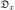
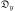
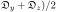
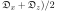
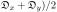

Next: The universal solution U Up: The new model-free optimisation Previous: The new protocol - Contents Index
The most general form of Brownian rotational diffusion of macromolecules is the diffusion of an ellipsoid, a diffusion also labelled as asymmetric or fully anisotropic.
This diffusion tensor can be fully specified by the geometric parameters
,
, and
, the eigenvalues of the tensor, as well as three orientational parameters, the Euler angles α, β, and γ.
The diffusion equation for an ellipsoid was derived using the reasoning of Einstein (1905) in the two papers of Perrin (1934) and Perrin (1936).
Following this, Favro (1960) unknowingly derived the same equations as presented in Perrin (1936) using a pseudo quantum mechanical approach.
Borrowing heavily from Perrin (1936), Woessner (1962) derived the correlation function relevant for NMR relaxation of a bond vector rigidly attached to an ellipsoid.
However these equations are not fully simplified and the parameter set {
,
,
, α, β, γ}, the eigenvalues and Euler angles defining the tensor, is not optimally constructed for minimisation.
A parameter shift to the set {
 ,
,
 ,
,
 , α, β, γ}, whereby the three geometric parameters are respectively the isotropic, anisotropic, and rhombic components of the diffusion tensor, drastically simplifies optimisation and is how the diffusion tensor is implemented within relax.
, α, β, γ}, whereby the three geometric parameters are respectively the isotropic, anisotropic, and rhombic components of the diffusion tensor, drastically simplifies optimisation and is how the diffusion tensor is implemented within relax.
When two of the eigenvalues of the diffusion tensor are equal the molecule diffuses as a spheroid.
This is also called axially symmetric anisotropic diffusion and can be described by the two geometric parameters
and
together with the polar angle θ and azimuthal angle φ which define the unique axis of the diffusion tensor.
Two classes of spheroid can be distinguished dependent on the relative values of the eigenvalues - the prolate and oblate spheroids.
By using parametric constraints, both tensor types can be optimised within relax.
The simplest form of diffusion occurs when all three eigenvalues are equal and the molecule diffuses as a sphere.
This isotropic rotation can be characterised by the single parameter
which is related to the global correlation time by the formula
1/τm = 6 (Bloembergen et al., 1948).
Not only can the diffusion tensor be optimised as a global model affecting all spins of the molecule but a set of model-free models can be constructed in which each spin is assumed to diffuse independently.
In these models a single local τm parameter approximates the true, multiexponential description of the Brownian rotational diffusion of the molecule.
Each spin of the macromolecule is treated independently.
Another set of model-free models which include the local τm parameter can be created and include tm0 to tm9 (Models 7.23.0-7.23.9 on page ![[*]](crossref.png) ).
These are simply models m0 to m9 with the local τm parameter added.
These models are an extension of the ideas introduced in Barbato et al. (1992) and Schurr et al. (1994) whereby the model tm2, the original Lipari and Szabo model-free equation with a local τm parameter, is optimised to avoid issues with inaccurate diffusion tensor approximations.
).
These are simply models m0 to m9 with the local τm parameter added.
These models are an extension of the ideas introduced in Barbato et al. (1992) and Schurr et al. (1994) whereby the model tm2, the original Lipari and Szabo model-free equation with a local τm parameter, is optimised to avoid issues with inaccurate diffusion tensor approximations.
In Brüschweiler et al. (1995) and further investigated in Lee et al. (1997), a methodology for determining the diffusion tensor from the local τm parameter together with the orientation of the XH bond represented by the unit vector μi was presented. A local τm value was obtained for each spin i by optimising model tm2. The τm, i values were approximated using the quadric model
where the eigenvalues of the matrix Q are defined as Qx = (, Qy = (, and Qz = (. The diffusion tensor is then found by linear least-squares fitting.